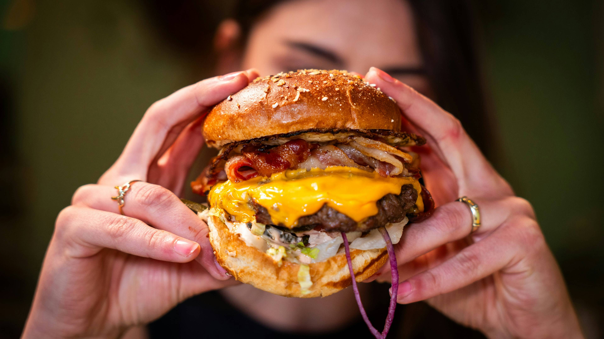
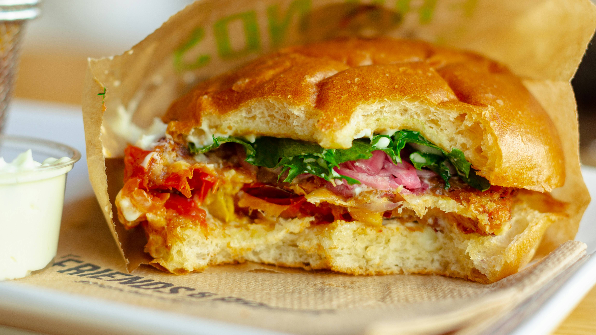
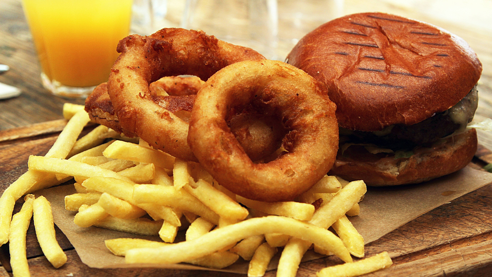
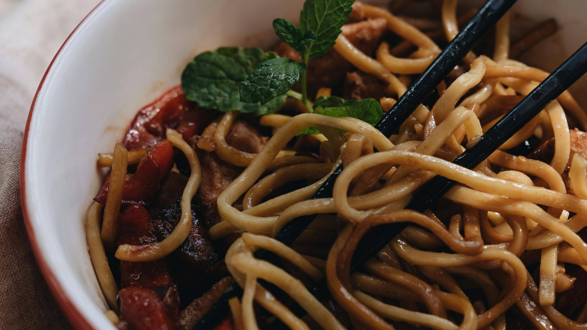
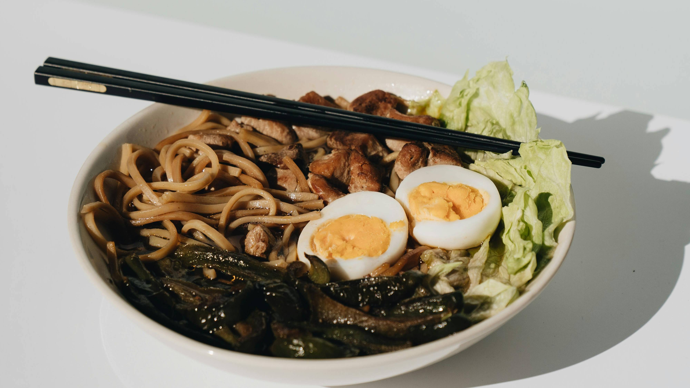
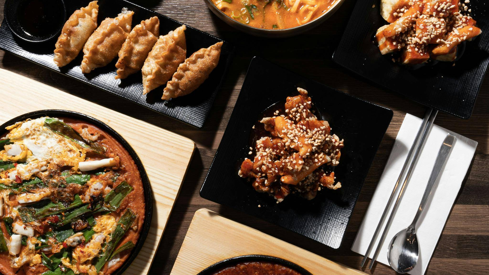

Hungry on a budget?
Us too... that’s why we’ve researched for you the best places to eat around that don’t break your bank!
Feeling like a burger?

Burger Burger
Burger Burger is a great choice for a more premium burger. The food is fresh, filling, and full of flavour. It costs more than fast food, but the quality makes it feel worth it. It’s a good option if you want to treat yourself without spending too much.

Shake Out
Shake Out is a good spot for a simple and satisfying burger meal. It’s known for burgers, fries, and shakes, making it a fun place to go with friends. The atmosphere is casual and relaxed, so it works well for lunch or dinner

Wise Boys
Wise Boys is a great option for a plant-based burger that still feels filling and indulgent. The food is full of flavour and doesn’t feel like a boring alternative. It’s a good choice for vegetarians, vegans, or anyone wanting something different.
Craving Asian?

Eden Noodles
Eden Noodles is a favourite for cheap and filling meals. Popular choices include the Dandan Noodles and the spicy beef noodle soup. The portions are generous, and the flavours are strong and warming. It is a great place to go if you want something affordable, spicy, and satisfying.

Ramen Takara
Ramen Takara is a good choice if you want a warm and comforting bowl of ramen. It is known for rich broth, soft noodles, and filling toppings. The food feels simple, hearty, and satisfying, especially on a cold day. It is a reliable option for an easy lunch or dinner.

Pocha
Pocha is a lively Korean restaurant with lots of variety. The menu includes fried chicken, noodles, rice dishes, and other shareable food. That makes it a fun place to go with friends if you want to try a few different things. It is a good choice if you want bold flavours and a more social dining experience.